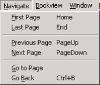

The Navigate menu allows you to quickly page through a multi-page document. Some menu commands are disabled when you are viewing either the first page or the last page of a document.

|
Menu command |
Toolbar icon |
Description |
|---|---|---|
|
First Page |
|
Displays the first page of a multi-page document or, if multiple documents are loaded, the first page of the previous document. Disabled when you are already viewing the first available page. |
|
Last Page |
|
Displays the last page of a multi-page document or, if multiple documents are loaded, the last page of the next document. Disabled when you are already viewing the last available page. |
|
Previous Page |
|
Displays the previous page of a multi-page document or, if multiple documents are loaded, the last page of the previous document. Disabled when you are already viewing the first available page. |
|
Next Page |
|
Displays the next page of a multi-page document or, if multiple documents are loaded, the first page of the next document. Disabled when you are already viewing the last available page. |
|
Go to Page |
Displays the Go to Page dialog box, which allows you to select a specific page to display. |
|
|
Go Back |
N/A |
Displays the page you were viewing before navigating to the current page. |